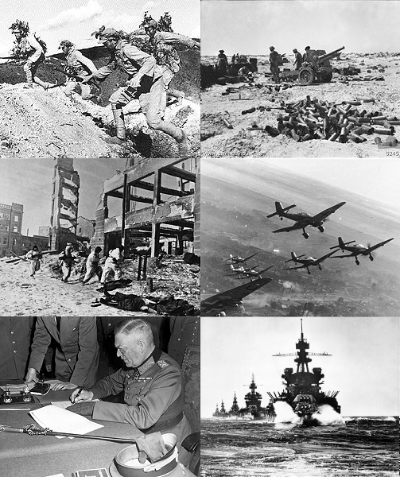

A Segunda Guerra Mundial foi um conflito militar global que durou de 1939 a 1945, envolvendo a maioria das nações do mundo e resultando em milhões de mortes e inúmeras consequências políticas e sociais. A guerra foi iniciada com a invasão da Polónia pela Alemanha em 1 de setembro de 1939, e a França e o Reino Unido declararam guerra à Alemanha dois dias depois.
A Segunda Guerra Mundial teve como contexto histórico o período após a Primeira Guerra Mundial, marcado por crises econômicas, políticas e sociais, especialmente na Europa. A ascensão do fascismo na Itália e do nazismo na Alemanha, a expansão territorial e o expansionismo alemão foram fatores cruciais para o início do conflito. A invasão da Polônia pela Alemanha em setembro de 1939, por exemplo, foi o estopim para a guerra.
A Segunda Guerra Mundial, um conflito que abrangeu grande parte do mundo entre 1939 e 1945, teve como principais envolvidos a Alemanha, Itália e Japão, que formaram o Eixo, e a França, Reino Unido, União Soviética e Estados Unidos, que compunham os Aliados. As motivações para o conflito foram complexas e variadas, incluindo expansionismo, ideologia e desequilíbrios pós-Primeira Guerra Mundial.
As principais batalhas da Segunda Guerra Mundial incluem a Batalha de Stalingrado, o Desembarque da Normandia, a Batalha da Inglaterra, a Batalha de Midway e a Batalha de Iwo Jima.
Os EUA desempenharam um papel crucial na Segunda Guerra Mundial, inicialmente como fornecedores de recursos aos Aliados através do Lend-Lease, e posteriormente como um participante militar ativo após o ataque a Pearl Harbor. Essa participação foi fundamental para a derrota do Eixo e para a transformação dos EUA em uma superpotência mundial.
A União Soviética teve um papel crucial na Segunda Guerra Mundial, especialmente na frente oriental. Enfrentou a maior parte do exército alemão e foi responsável por importantes vitórias, como em Stalingrado e Kursk, que marcaram a virada da guerra. A URSS também libertou os prisioneiros dos maiores campos de concentração e extermínio mantidos pelo Terceiro Reich.
Durante a Segunda Guerra Mundial, as cidades japonesas de Hiroshima e Nagasaki foram alvo de ataques com bombas atômicas pelos Estados Unidos. Em 6 de agosto de 1945, a bomba Little Boy foi lançada em Hiroshima, causando a morte instantânea de cerca de 80.000 pessoas e deixando um rastro de destruição e sofrimento. Três dias depois, em 9 de agosto, a bomba Fat Man foi lançada em Nagasaki, causando a morte de mais 40.000 pessoas. Estes ataques marcaram o primeiro e único uso de armas nucleares em guerra e contribuíram para o fim da Segunda Guerra Mundial.
A Segunda Guerra Mundial (1939-1945) foi o maior e mais devastador conflito da história humana, com consequências de longo alcance que afetaram o mundo de diversas maneiras. Entre as principais consequências e impactos, destacam-se o número enorme de mortes, a destruição de cidades e infraestruturas, a ascensão de novas potências, a divisão do mundo em blocos ideológicos e o início da Guerra Fria.
Sentido horário, do topo à esquerda: Forças chinesas na Batalha de Wanjialing; forças australianas durante a Primeira Batalha de El Alamein; aviões alemães Stuka na Frente Oriental; forças navais estadunidenses no Golfo de Lingayen; Wilhelm Keitel assinando a Rendição Alemã; tropas soviéticas durante a Batalha de Stalingrado.
